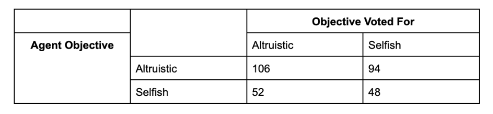
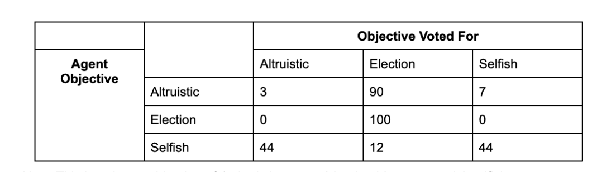
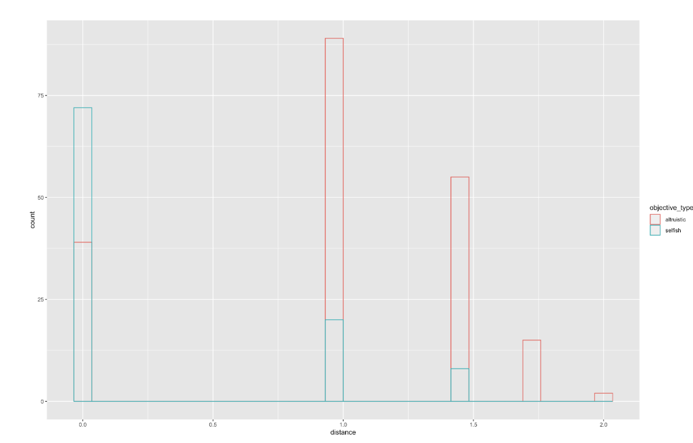
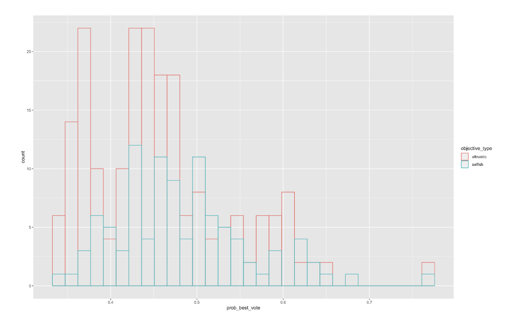
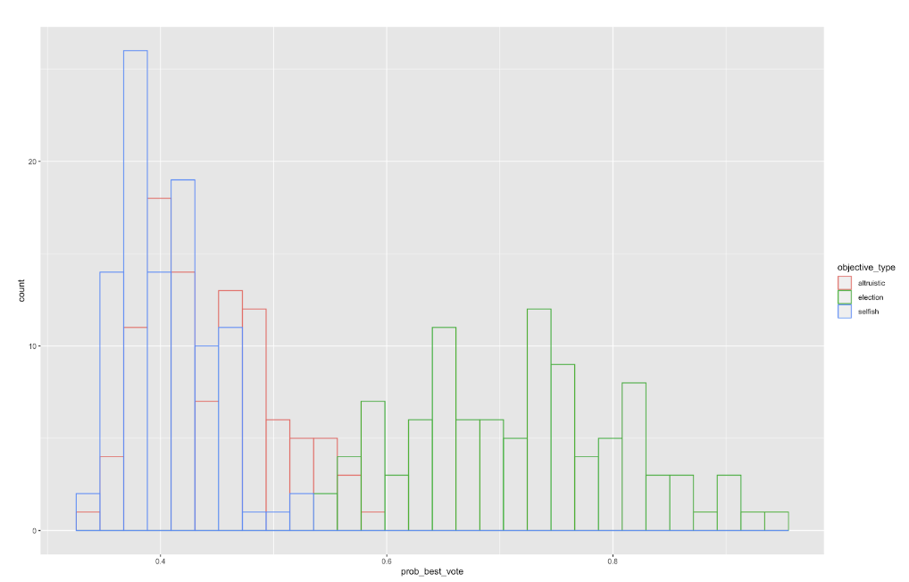

Representing the Group: A look at group composition's affect on representative selection and policy.
By Becky Neufeld and Chris Zosh
What is it?
We propose a model of a repeated game in which learning agents are tasked with choosing a member to represent the group. Agents vary in two ways: they have a certain policy they'd like to see implemented (represented by a bit-string), and they have one of three types of objectives from which they derive utility (altruistic, selfish, and elected). While the former represents the agent's personal interests, the latter affects their voting behavior by shaping what the agent believes the role of a leader for the group should be. In abstract, agents will vote for a member to be the leader, the leader will implement a policy, agents will get feedback on how happy the policy makes them, and then agents refine their choice for next period via a simple reinforcement learning algorithm.
So how does the composition of objectives agents use in the group change who is elected and what policy represents the group? First, let's dig into some model details.
How does it work?
As with many simulations or repeated games, we need to establish both the initial conditions and how the game is iterated over. We provide a step by step list of the processes in our model, and proceed to dive into detail on each below.
Initialization:
Model Steps:
Score t+1 (Action) = (1-α) Score t (Action) + α (Utility t + ß*Norm_SW t) if Action taken at time t,
= (1-α) Score t (Action) otherwise
Results
So how does the composition of objectives agents use in the group change who is elected and what policy represents the group? Do they matter? For the purposes of this write-up, we investigate a two scenarios which have a minor change in composition. Our preliminary results seem to indicate that composition matters quite a bit.
In scenario 1, we explore a model with 3 agents: 1 Selfish and 2 Altruistic. In scenario 2, we consider a model containing 1 Selfish, 1 Altruistic, and 1 Elected type agents. While, apriori, we may think this change in composition is marginal, we'll see that it changes voting and policy implementation behavior quite a bit.
In the tables below, we show the frequency of voting preferences developed by agents of each type. Table 1 corresponds to scenario 1, and Table 2 corresponds to scenario 2.


We can see that in Scenario 1, it looks like any agent can emerge as the leader, and agents are equally likely to converge on voting for a leader of either type. Since there are two altruists and one selfish agent though, it seems being selfish in this group means you're twice as likely to get elected compared to an altruist.
In scenario 2, by simply switching one agent type from an altruist to elected type, a completely different voting behavior emerges. With a fairly high level of certainty, we see the elected type agent win the popular vote.
Withing group, we also identify some behaviors which seem pretty inlign with our intiution. Altruistic agents seem more likely to implement policies further from their own desired policy (seen below).
Curiously, we also see a difference in how certain agents are about their strategies (seen below). The plot shows with what level of certainty (with what probability) agents choose their favored action at an earlier point in the run for each scenario. The first table is for scenario 1, and the second for scenario 2. It seems the leader's problem is much easier to solve than the problem for the other two agent types.


Future directions
Our future direction includes modeling directions, and exploring our model further. First we want to replicate our results by running the model for a greater number of trials and establishing convergence measures. Additionally we want to investigate if and when different specifications of the learning algorithm change the model results.
In this write-up our results are very preliminary so we also want to invest more time in investigating the model behavior. Specifically, we want to investigate how different parameters, such as having different combinations of agent objectives, change what objectives the agents vote for, what policies are put in place and how optimal these policies are using different criteria. Specifically, we are curious about the conditions that lead agents to choose the socially versus personally optimal policies and if there are conditions where both selfish and leadership agents will choose policies that are optimal for the whole group. Along these lines we are interested in cases where selfish agents may learn to choose policy that is different from their specific goals to increase the chance they get elected as leader. It may also be the case that different combinations of agent objectives lead to selfish agents choosing altruistic agents as leaders and vice versa instead of their own objective. Overall our future directions mainly center around fully exploring the modeling behavior so more deeply answer our research questions.